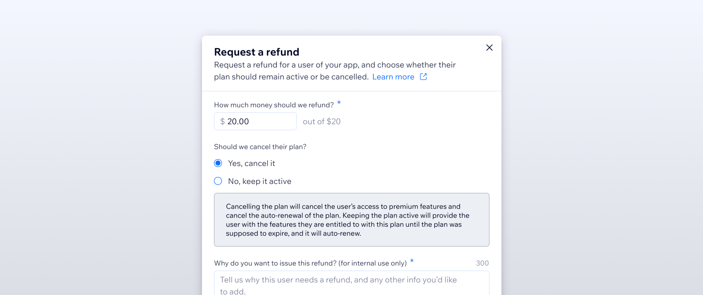
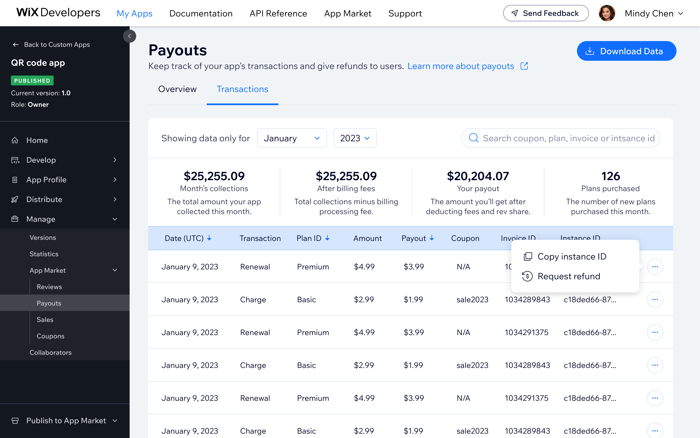
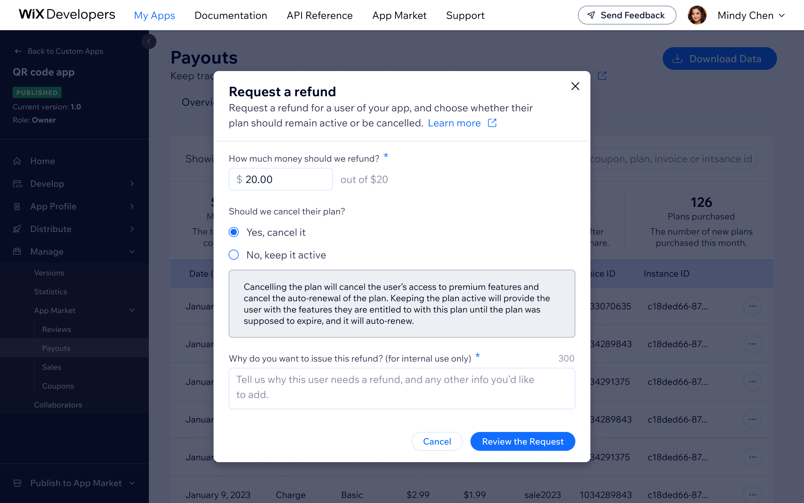
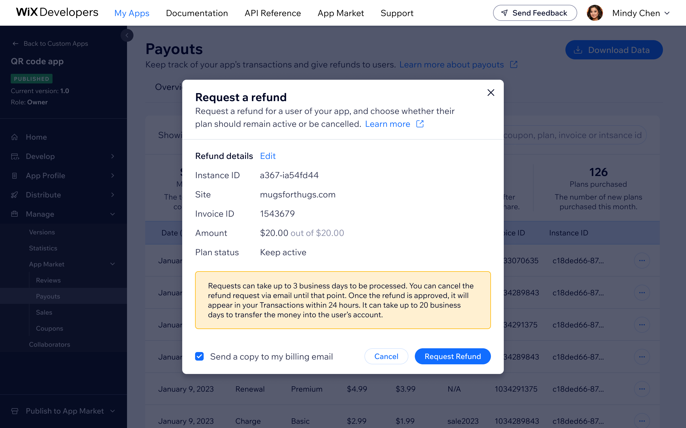

Refund Flow
Self-serve refund flow that eliminated manual Dev Relations intervention and scaled with the platform

I designed the refund flow embedded within the payouts transaction table, covering the full lifecycle: inline initiation, confirmation dialog, processing state, and success/error states. I collaborated with finance and engineering to align the design with backend refund logic and constraints.
Mapping the flow
- The existing process required Dev Relations to intervene manually for every refund. I mapped the end-to-end journey to find where self-serve could take over
- Identified key decision points and edge cases: subscription state, what the developer needs to confirm, and how to handle in-progress and error states
Designing it
- Designed the initiation point inline within the transactions table, so developers wouldn't have to leave their current context
- Designed the confirmation dialog, processing state, and success and error states
- Collaborated with finance and engineering to align the design with backend refund logic and constraints
Impact
- Eliminated manual Dev Relations team intervention for every refund - at the platform's scale, self-serve refund was operationally necessary
- Refund volume grew significantly year over year as the platform scaled, reinforcing the importance of in-product financial control
- A significant volume of financial activity previously invisible to developers is now self-serve accessible
Screens
The flow, step by step



Bottom line
The edge cases were where all the real design work happened: what state is the subscription in, what exactly does the developer need to confirm, how do you make a consequential financial action feel safe without making it feel hard. The error and in-progress states needed as much attention as the happy path. At the platform's scale, eliminating manual intervention for every refund wasn't optional.